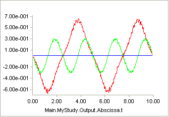

Lesson 1: The Basics of Muscle Definition#
The key to understanding muscles in the AnyBody Modeling System is to realize that they mechanically consist of two separate computational models:
The kinematic model, which determines the muscle’s path from origin to insertion depending on the posture of the body. This also entails finding the length and contraction velocity of the muscle.
The strength model which determines the muscle’s strength and possibly its passive elastic force depending on the kinematic state of the muscle.
This would be a sad excuse for a tutorial if we did not have an example to work on. So let us quickly construct a very simple example that will enable us to examine the properties of muscles.
Here’s an extremely simple one-degree-of-freedom model.
// This is a very simple model for demonstration of muscle modeling
Main = {
AnyFolder MyModel = {
// Global Reference Frame
AnyFixedRefFrame GlobalRef = {
AnyDrawRefFrame drw = {
RGB = {1,0,0};
};
}; // Global reference frame
// Define one simple segment
AnySeg Arm = {
r0 = {0.500000, 0.000000, 0.000000};
Mass = 1.000000;
Jii = {0.100000, 1.000000, 1.000000}*0.035;
AnyRefNode Jnt = {
sRel = {-0.5, 0.0, 0};
};
AnyDrawSeg drw = {};
};
// Attach the segment to ground by a revolute joint
AnyRevoluteJoint Jnt = {
AnyRefFrame &ref1 = .GlobalRef;
AnyRefFrame &ref2 = .Arm.Jnt;
Axis = z;
};
// Drive the revolute joint at constant velocity
AnyKinEqSimpleDriver Drv = {
DriverPos = {-10*pi/180};
DriverVel = {40*pi/180};
AnyRevoluteJoint &Jnt = .Jnt;
Reaction.Type = {0};
};
}; // MyModel
// The study: Operations to be performed on the model
AnyBodyStudy MyStudy = {
AnyFolder &Model = .MyModel;
InverseDynamics.Criterion.Type = MR_MinMaxStrict;
Gravity = {0.0, -9.81, 0.0};
};
}; // Main
When you load the model, open a model view window, and run the SetInitialConditions operation, you should get the following picture:

The model has a driver, so you can run the kinematic analysis and see the movement. The arm flexes about the origin of the red reference frame. If you try to run the InverseDynamicAnalysis, you will get an error:
ERROR(OBJ1) : C:/../MuscleDemo.Ini.any(43) : MyStudy.InverseDynamics : No solution found : There are fewer unknown forces (muscles and reactions) than dynamic equations.
This is because the model does not have any muscles to balance the arm against the downward pull of gravity. Let us define the simplest possible muscle to carry the load. As mentioned above, a muscle has two basic components: a kinematic model, and a strength model. We shall begin with the latter, and for the time being define the simplest possible version.
If you pick the Classes tab in the right-hand side of the window, then you will get access to the class tree. Expand the tree as shown in the picture until you get to the AnyMuscleModel.

Notice that this class has three derived classes. These are more advanced muscle models, and we shall get to those later. However for the time being, place the cursor in the Editor View on an empty line just after the end brace of the driver definition, right-click the AnyMuscleModel class in the tree, and select “Insert Class Template”.This causes an instance of the AnyMuscleModel class to be inserted into the model (new code marked with red):
// Drive the revolute joint at constant velocity
AnyKinEqSimpleDriver Drv = {
DriverPos = {-10*pi/180};
DriverVel = {40*pi/180};
AnyRevoluteJoint &Jnt = .Jnt;
Reaction.Type = {0};
};
AnyMuscleModel <ObjectName> = {
F0 = 0.0;
//Lf0 = 0.0;
//Vol0 = 0.0;
};
This is the simplest type of muscle model the system provides, and it is simply a specification of strength corresponding to the assumed maximum voluntary contraction of the muscle. A muscle with this type of model does not have any dependency on length or contraction velocity, and it does not take the passive elasticity of the tissue into account. Despite this simplicity, it is used with considerable success for many studies where the movements or postures are within the normal range of the involved joints, and where contraction velocities are small.
There are two optional parameters for this model. Vol0 can be used in muscle
recruitment to form a muscle volume weighted sum of muscle activations; see e.g.
[^cite_happee-van-der-hel-1995]. Lf0 can be tuned in a calibration study; then
using Vol0, modified physiological cross sectional area (PCSA) of the
muscle can be computed by the user (e.g. as PCSA=Vol0/Lf0), which can be
used afterwards to modify the value for F0.
Let us perform the necessary modifications to make the model useful to us:
AnyMuscleModel SimpleModel = {
F0 = 100;
//Lf0 = 0.0;
//Vol0 = 0.0;
};
The next step is to define a muscle that can use the model. This is actually the first of the two elements mentioned above: Muscle kinematics.
Again, the AnyBody Modeling System provides a number of choices, and we shall start by picking the simplest one. It is instructive to once again use the tree to insert a template of the muscle object, because the tree reveals the class dependency. A muscle resolves kinematical information in the sense that it has a certain path from origin to insertion, and it also provides force. These two properties are reflected in the way the muscle classes are derived from a kinematic measure as well as force classes.
The simplest type of muscle is the AnyViaPoint muscle. It spans the path between origin and insertion by passing through any number of via points on the way. The via points are fixed to segments or to the global reference frame. It is a simple and convenient way to define many of the simpler muscles of the body, primarily those in the extremities and the spine. You can, in fact, make a pretty decent model of the legs entirely with via point muscles.
Place the cursor right after the end brace of the musle model, right-click the AnyMuscleViaPoint class in the tree, and insert an instance of it:

AnyMuscleModel SimpleModel = {
F0 = 100;
//Lf0 = 0;
//Vol0 = 0;
};
AnyMuscleViaPoint <ObjectName> = {
//RefFrames = ;
//Surfaces = ;
AnyMuscleModel &<Insert name0> = <Insert object reference (or full object definition)>;
AnyRefFrame &<Insert name0> = <Insert object reference (or full object definition)>;
AnyRefFrame &<Insert name1> = <Insert object reference (or full object definition)>;
//AnyRefFrame &<Insert name2> = <Insert object reference (or full object definition)>; You can make any number of these objects!
};
Let us start by filling out what we can and removing what we have no use for:
AnyMuscleViaPoint Muscle1 = {
AnyMuscleModel &Model = .SimpleModel;
AnyRefFrame &<Insert name0> = <Insert object reference (or full object definition)>;
AnyRefFrame &<Insert name1> = <Insert object reference (or full object definition)>;
};
Notice that we have left only two points in the list of via points. This is obviously the minimal requirement and will create a muscle in a single line from origin to insertion. But before we proceed with the definition of the muscle we must define the necessary points on the model to attach the muscle to. We shall define the origin on the global reference frame and the insertion on the segment:
// Global Reference Frame
AnyFixedRefFrame GlobalRef = {
AnyDrawRefFrame drw = {
RGB = {1,0,0};
};
AnyRefNode M1Origin = {
sRel = {0.0, 0.1, 0};
};
}; // Global reference frame
// Define one simple segment
AnySeg Arm = {
r = {0.500000, 0.000000, 0.000000};
Mass = 1.000000;
Jii = {0.100000, 1.000000, 1.000000}*0.1;
AnyRefNode Jnt = {
sRel = {-0.5, 0.0, 0};
};
AnyRefNode M1Insertion = {
sRel = {0.0, 0.1, 0};
};
AnyDrawSeg drw = {};
};
With these two points, we can complete the definition of the muscle:
AnyMuscleViaPoint Muscle1 = {
AnyMuscleModel &Model = .SimpleModel;
AnyRefFrame &Orig = .GlobalRef.M1Origin;
AnyRefFrame &Ins = .Arm.M1Insertion;
AnyDrawMuscle drw = {};
};
Notice that we have added an AnyDrawMuscle object to the definition.
Like other classes in AnyScript, muscles are not drawn in the Model View
window unless you specifically ask for it. When you load the model and
run the SetInitialConditions study you will get the following picture
(if your model does not load, and you cannot find the error, clickhere to download a model that works):

Notice that the muscle is now able to balance the gravity, and we are able to run the InverseDynamicAnalysis. If you try it out and subsequently open a chart view, you are able to plot the muscle force:

The muscle force is the item Fm in the list of properties you can plot for a muscle. As you can see, lots of other properties are available, but if you try to plot them you will find that many of them are zero. This is because they are not relevant for this very simple type of muscle. We shall return to the significance of the different properties later in this tutorial.